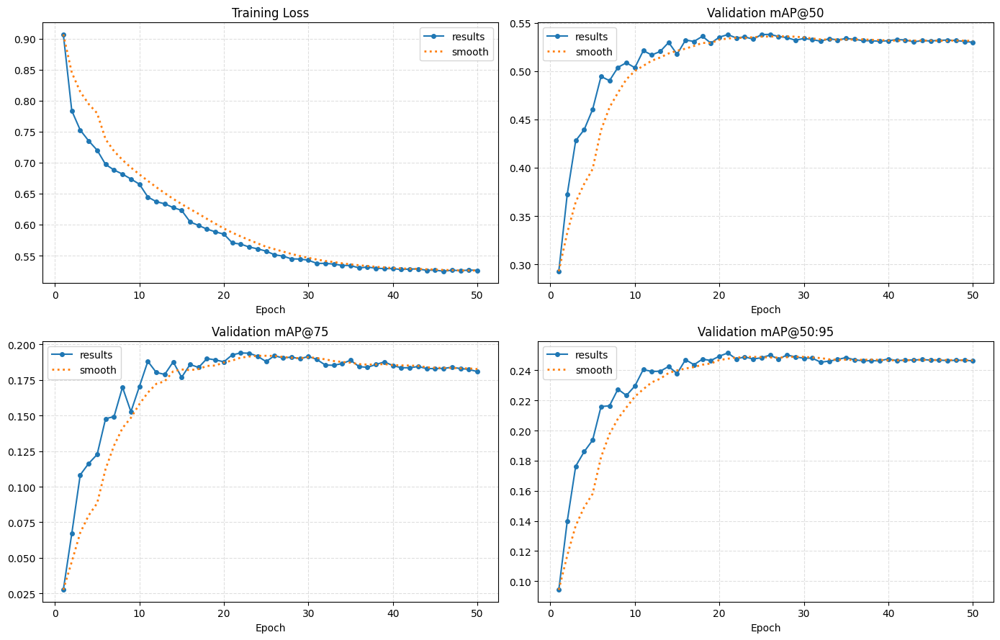
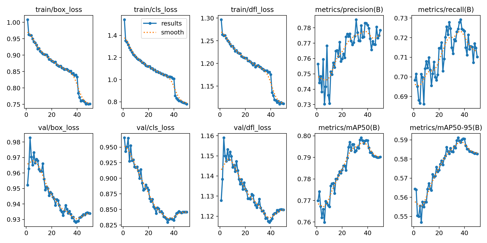

Assignment A2: Faster R-CNN - Object Detection
1. Introduction to the Research Paper
1.1. Paper Information
Title: Faster R-CNN: Towards Real-Time Object Detection with Region Proposal Networks
Authors: Shaoqing Ren, Kaiming He, Ross Girshick, and Jian Sun
Conference: Advances in Neural Information Processing Systems (NeurIPS), 2015
Paper: Read the original paper
Official implementation: py-faster-rcnn
1.2. Research Background
Object detection is a fundamental computer vision task that requires a model to identify objects in an image, classify their categories, and predict their corresponding bounding boxes.
Earlier object detection approaches, such as R-CNN and Fast R-CNN, relied on external region proposal algorithms to generate candidate object regions. These separate proposal algorithms introduced additional computational overhead and prevented the entire detection pipeline from being fully optimized through a unified network.
Faster R-CNN addresses this limitation by introducing a Region Proposal Network (RPN), which shares convolutional features with the detection network.
Research motivation: Integrating region proposal generation and object detection into a unified deep learning framework to improve detection efficiency while maintaining accuracy.
1.3. Research Objective
The paper proposes Faster R-CNN, a two-stage object detection framework that integrates region proposal generation with object classification and bounding box regression.
Its main objective is to eliminate the computational bottleneck caused by external region proposal methods by introducing a trainable Region Proposal Network.
The RPN and Fast R-CNN detection network share convolutional feature maps, allowing both components to operate efficiently within a unified framework.
1.4. Main Contributions
- Introduces the Region Proposal Network (RPN) for generating object proposals using convolutional features.
- Shares convolutional feature maps between the RPN and the detection network.
- Introduces anchor boxes with multiple scales and aspect ratios to detect objects of different sizes and shapes.
- Combines region proposal generation, object classification, and bounding box regression in a unified framework.
- Demonstrates improved detection efficiency compared with previous region proposal-based approaches.
1.5. Relevance to This Experiment
This experiment implements and compares two object detection architectures: Faster R-CNN and YOLO11n, using the Pascal VOC dataset.
Faster R-CNN is a two-stage object detector that uses a Region Proposal Network (RPN) to generate candidate object regions, followed by a detection head to classify objects and refine their bounding boxes. This experiment uses a custom Faster R-CNN implementation with an ImageNet-pretrained VGG16 backbone.
YOLO11n is a one-stage object detector that performs object classification and bounding box regression in a unified detection pipeline. Its architecture consists of a backbone, neck, and detection head.
Both models are adapted to the Pascal VOC dataset, which contains 20 object categories. Faster R-CNN uses 21 classes, including the background class, while YOLO11n predicts the 20 foreground object categories.
The experiment investigates and compares the detection performance, localization quality, training efficiency, inference speed, and computational complexity of Faster R-CNN and YOLO11n.
2. Dataset & Exploratory Data Analysis
- Dataset: Pascal Visual Object Classes (VOC).
- Dataset source: Pascal VOC Dataset
- Annotation format: XML files containing object categories and bounding boxes.
- Detection task: Predict object categories and bounding box coordinates.
- Number of classes: 20 object categories, excluding background.
2.1. Dataset Split
| Dataset | Purpose | Number of Images | Annotation |
|---|---|---|---|
| Train | Model Training | 17,125 (VOCtrainval_11-May-2012.tar) | XML Bounding Boxes |
| Validation | Model Selection | 2,459 (VOCtest_06-Nov-2007.tar) | XML Bounding Boxes |
| Test | Final Evaluation | 2,493 (VOCtest_06-Nov-2007.tar) | XML Bounding Boxes |
| Total | 22,077 | XML Bounding Boxes | |
2.2. Image Distribution

Distribution of images across training, validation, and test sets.
Total dataset size: 22,077 images. The training set accounts for approximately 77.6% of the dataset.
2.3. Reason for Selection
Pascal VOC is a widely used benchmark for object detection. It provides standardized object categories and bounding box annotations, making it suitable for evaluating both object localization and classification performance.
Its XML annotation format also allows the implementation of a custom PyTorch Dataset for Faster R-CNN.
3. Training Hyperparameters
The following tables summarize the training configurations used for Faster R-CNN (VGG16) and YOLO11n.
3.1. Faster R-CNN (VGG16)
| Hyperparameter | Value |
|---|---|
| Epochs | 20 |
| Batch size | 4 |
| Optimizer | SGD |
| Backbone learning rate | 0.0005 |
| Detection head learning rate | 0.005 |
| Momentum | 0.9 |
| Weight decay | 0.0005 |
| LR scheduler | StepLR |
| LR scheduler step size | 5 |
| LR scheduler gamma | 0.5 |
| Number of workers | 0 |
| Print frequency | Every 50 iterations |
3.2. YOLO11n
| Hyperparameter | Value |
|---|---|
| Pretrained weights | yolo11n.pt |
| Epochs | 50 |
| Batch size | 4 |
| Image size | 640 × 640 |
| Optimizer | SGD |
| Initial learning rate (LR0) | 0.001 |
| Final learning rate factor (LRF) | 0.01 |
| Momentum | 0.9 |
| Weight decay | 0.0005 |
| Learning rate schedule | Constant |
| Workers | 0 |
3.3. Training Configuration Comparison
Both models use SGD with the same momentum, weight decay, batch size, and number of data-loading workers. However, their training configurations differ in the number of epochs and learning rate strategies.
- Faster R-CNN: Uses separate learning rates for the VGG16 backbone and detection head, with a StepLR scheduler to reduce the learning rate during training.
-
YOLO11n: Starts from pretrained
yolo11n.ptweights and uses LR0 and LRF to configure its learning rate. - Training duration: Faster R-CNN is trained for 20 epochs, whereas YOLO11n is trained for 50 epochs.
Note: The learning rate schedule reported for YOLO11n should be verified against the actual Ultralytics training configuration to ensure that the Constant setting accurately represents the learning rate behavior during training.
4. Evaluation Metrics & Comparison Results
4.1. Evaluation Metrics
Object detection performance is evaluated using Mean Average Precision (mAP), Precision, and Recall to assess classification accuracy and bounding box localization. Precision and Recall are calculated using a confidence threshold of 0.5 and an IoU threshold of 0.5.
| Metric | Description |
|---|---|
| mAP@0.5 | Mean Average Precision at an IoU threshold of 0.5. |
| mAP@0.5:0.95 | Mean Average Precision averaged across IoU thresholds from 0.5 to 0.95, with an interval of 0.05. |
| Precision@0.5 | Ratio of correctly matched predictions to all predictions above the confidence threshold of 0.5, using an IoU threshold of 0.5. |
| Recall@0.5 | Ratio of ground truth objects successfully detected at an IoU threshold of 0.5. |
mAP is the primary object detection metric. Precision, Recall and F1-score should be calculated using a consistent confidence threshold and IoU matching protocol.
4.2. Overall Detection Performance
| Model | mAP@0.5 | mAP@0.5:0.95 | Precision@0.5 | Recall@0.5 |
|---|---|---|---|---|
| FreezeVGG16 | 0.5098 | 0.2393 | 0.7175 | 0.4517 |
| YOLO11n | 0.792 | 0.583 | 0.7648 | 0.7165 |
4.3. Computational Efficiency
| Model | Total Parameters | Trainable Parameters | Frozen Parameters | Model Size (KB) | Training Time (hours) |
|---|---|---|---|---|---|
| Faster R-CNN (VGG16) | 137,073,622 | 122,358,934 | 14,714,688 | 1,013,431KB | 14.34 |
| YOLO11n | 2,624,080 | 2,624,080 | 0 | 5358KB | 7.53 |
Parameter counts must be measured again using the final VGG16 and YOLO11n after replacing their prediction heads and applying the backbone freezing strategy.
4.4. Training Performance
Faster RCNN

Faster RCNN training
YOLO11n

YOLO11n